| 日付 | 2009年8月15日（土） - 2009年8月22日（土） | ||||||||||||||
|---|---|---|---|---|---|---|---|---|---|---|---|---|---|---|---|
| 山域 | 北海道の山 | ||||||||||||||
| メンバー | 単独 | ||||||||||||||
| 山行形態 | 7泊8日テント泊 | ||||||||||||||
| アクセス | 電車、飛行機、バス | ||||||||||||||
| ルート (Map) |
|
今年の夏休みは海外に行く予定が無いので、山に行くことにする。
北アルプスか北海道かどちらに行くか迷ったが、
先週北アルプスに行ったばかりなので、長期休暇でしか行けない北海道に行くことにする。
1日目
飛行機に乗って北海道に向かう。
電車や船も考えたが、やはり飛行機の圧倒的な速さは魅力的だ。
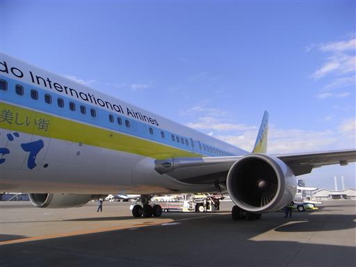
旭川空港からバスに乗って旭川駅に到着。
北海道に来るのは8年ぶり2度目だ。
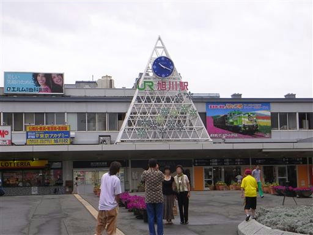
まずはガスを買うためにホームセンターに行く。
ガスは飛行機に乗せられないため現地調達の必要がある。
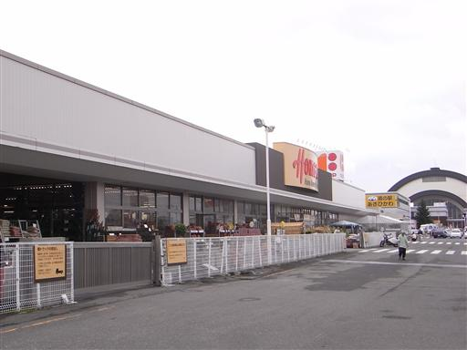
北海道といえばラーメン。
腹ごしらえをしてバスで大雪山に向かう。

旭川駅からバスに乗って1時間ほどで、旭岳ロープウェイに到着する。
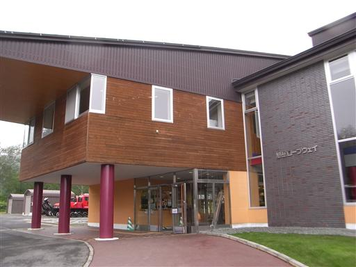
下から歩くこともできるが、ロープウェイに乗って上まで行くことにする。
空はどんよりとしている。
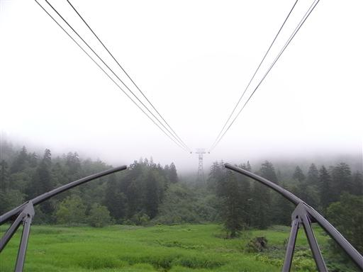
14:15 姿見駅到着。標高1610m。
雲に覆われて視界はまったく無い。
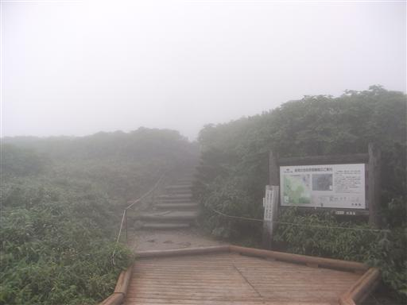
観光客はちらほらというところ。
息をしても大丈夫かと思うほど濃いガスが漂っている。
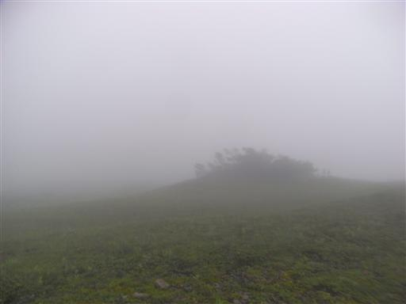
姿見の池に到着。
晴れていれば池に旭岳がきれいに映るらしいが、
旭岳どころか池すら見えない。
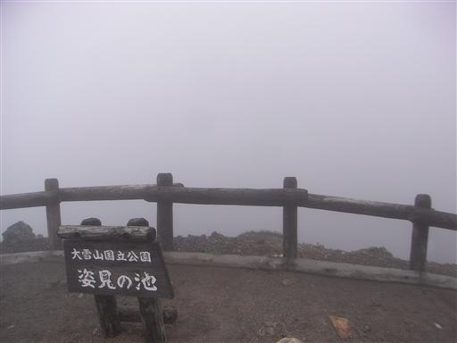
池のそばには旭岳石室避難小屋がある。
緊急時以外は使用禁止らしいが、すぐ近くにロープウェイ乗り場があるので、
利用価値はあるのだろうか？
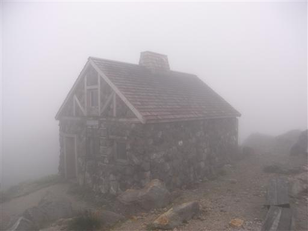
火山らしい礫地を登っていく。
視界は0なので北海道の山という感じはまったくしない。
物珍しいものと言えば、下方から聞こえるゴーゴーという噴煙をあげる音と
微かな硫黄の匂いだけだ。
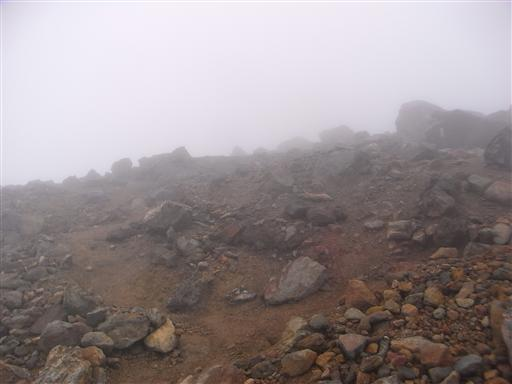
15:53 旭岳山頂到着。標高2291m。
今朝、関東の自宅を出発し、その日のうちに北海道の最高峰に立てるとは。
文明の力は本当にすごい。
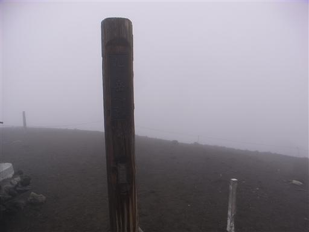
東側の斜面を下ってテント場に向かう。
沢地形でもないのに、付近には巨大な雪渓が広がっている。
途中で激しい雨が降ってくる。
週間天気予報では快晴、直前予報は曇、現地に着いたら雨だ。
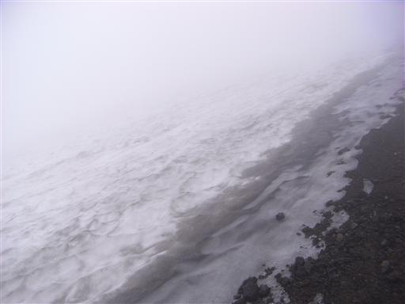
16:21 裏旭キャンプ指定地到着。標高2080m。
だだっ広いところでずいぶん風が強そうなテント場だが、
今日の風はそれほど強くない。
あちらこちらに石で暴風壁が作られている。
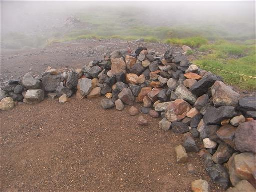